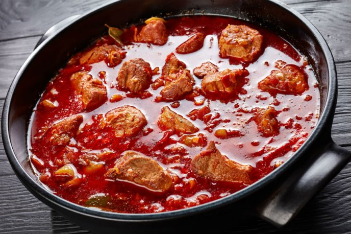

Chile colorado

Description
This dish constitues around 80% of your average mexican diet.
Finding the right kind of chile is the key.
Ingredients
- Beef or pork
- Chile de la tierra (sometimes called guajillo)
- Garlic
- Oregano
- A single cube of chicken bouillon
- (Optional) Maize flour
Steps
- Chop your meat of choice into small chunks.
- Cook the meat in a pan (whichever doneness you prefer is fine)
- Boil the chiles.
- Put the chiles with some water in the blender along the oregano, garlic and bouillon
- (Optional) Mix the flour with some water and salt and make small spheres with the mix
- Add the chile mix to the meat and let it rest on medium fire
- If you decided to add the flour balls add them while the stew is cooking on medium fire